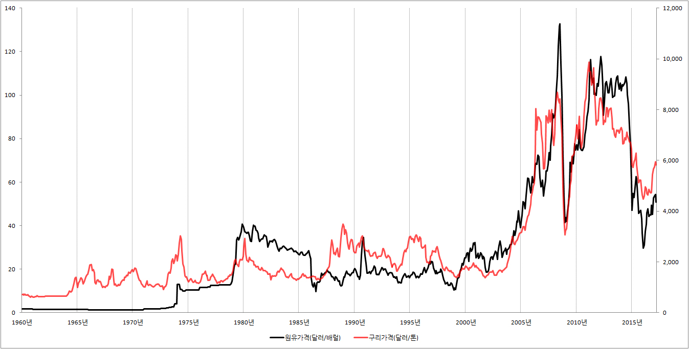

■ 국제 구리가격과 세계경제전망
1.원자재가격과 세계경제
경제가 좋아서 사람들이 열심히 쇼핑을 하면 그만큼 원자재에 대한 수요가 증가하게 됩니다. 공장의 기계를 돌리려면 기름이 필요하고, 자동차를 만들려면 철이 필요하기 때문입니다. 따라서 경제가 좋아지면 좋아질수록 각종 원자재에 대한 수요가 증가하고, 수요가 증가하는 만큼 가격도 상승하게 됩니다.
결국 국제 원자재 가격의 상승은 세계경제의 봄날을 예언하는 좋은 신호가 됩니다.
이와 반대로 세계경제가 시련을 맞이하면 원자재에 대한 수요가 감소합니다. 공장의 가동시간이 줄어드는 만큼 기름 소비가 줄어들고, 자동차 판매가 줄어드는 만큼 철의 소비가 줄어듭니다. 따라서 세계경제가 나빠지면 원자재에 대한 수요가 줄어들고, 수요가 줄어드는 만큼 원자재 가격이 하락을 합니다.
결국 국제 원자재 가격의 하락은 세계경제의 시련을 예언하는 신호가 됩니다.
2. 구리가격과 세계경제
원자재 가격의 상승은 세계경제의 봄날을, 원자재 가격의 하락은 세계경제의 시련을 상징합니다. 하지만 반드시 이런 인과관계가 성립하는 것은 아닙니다.
원유에 대해 한번 생각해 봅시다. 원유가격은 경제적 요인에 의해서만 변동하는 것이 아닙니다. 정치, 사회적인 문제로 변동하는 경우도 무척 많습니다. 예를 들어 중동에서 대규모 시위가 일어나거나 중동에서 국제분쟁이 발생해서 원유가격이 경제와 무관하게 늘뛰기를 하는 경우를 우리는 수없이 보아 왔습니다. 따라서 단순히 원유가격의 상승이나 하락으로 세계경제의 미래를 예측할 수는 없습니다.
그래서 주목을 받는 것이 구리 가격입니다. 구리는 국제 정치나. 분쟁과 상관없이 경제적 요인에 의해 움직이는 것으로 알려져있습니다.
구리가 중요한 이유는 쉽게 짐작할 수 있습니다. 가만히 생각해보십시오. 우리가 쉽게 접하는 전기·전자제품에는 기본적으로 구리가 들어가 있습니다. 구리없이 돌아가는 전지·전자제품이 없을 정도입니다. 그래서 세계경제의 호황으로 전기·전자제품에 대한 수요가 증가하면 그만큼 구리가격이 상승하고, 세계경제의 불황으로 전기·전자제품에 대한 수요가 감소하면 그만큼 구리가격이 하락하게 됩니다.
따라서 원유가격 못지 않게 많은 사람들이 관심을 두고 있는 것이 구리가격입니다.
※ 국제 원유가격과 구리가격 그래프

{kind=link}
3.구리가격 조회 사이트
국제 구리가격은 네이버나 다음같은 포털사이트에서 쉽게 조회할 수 있습니다. 하지만 수십년 간의 자료를 분석하거나 엑셀 파일로 다운받고 싶다면 세인트루이스 연방준비은행이나 세계은행을 이용하면 됩니다.
※ 세인트루이스 연방준비은행 : 세인트루이스 연방준비은행에 접속한 후 검색 창에 'copper'을 입력하고 엔터키를 치면 됩니다.
※ 세계은행 : 세게은행에 접속한 후 검색 창에 'Commodity Markets'을 입력하고 엔터키를 칩니다. 그리고 나서 'Commodity Markets'을 선택하면 구리가격뿐만 아니라 원유, 천연가스, 석탄, 알루미늄, 철광석, 주석, 니켈, 아연, 금, 은 등의 각종 원자재 가격을 조회 할 수 있습니다.